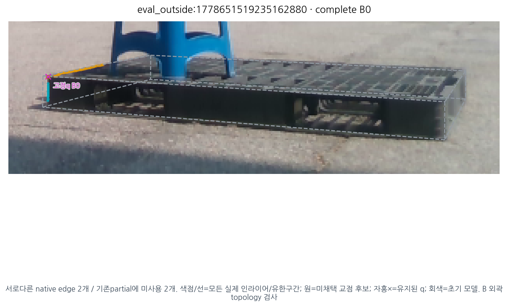
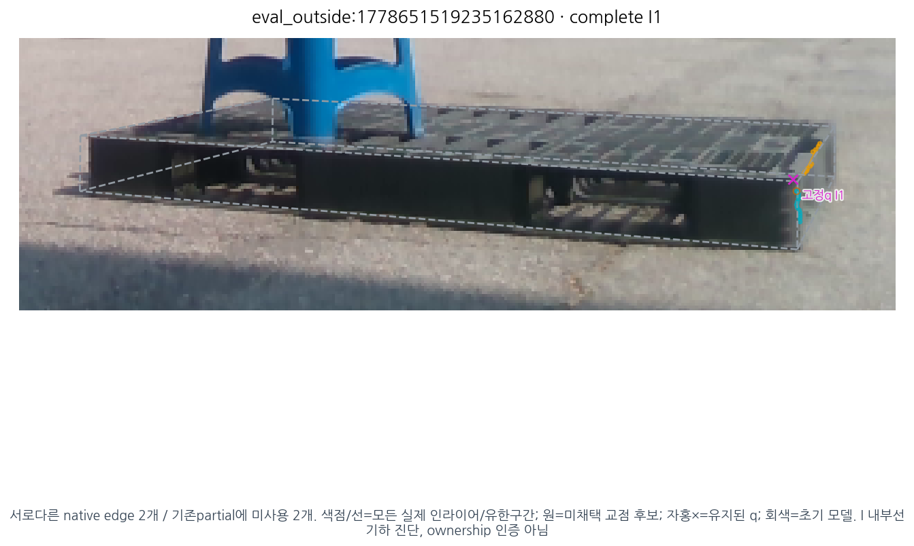
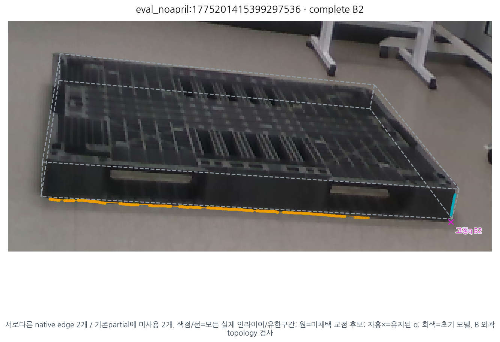
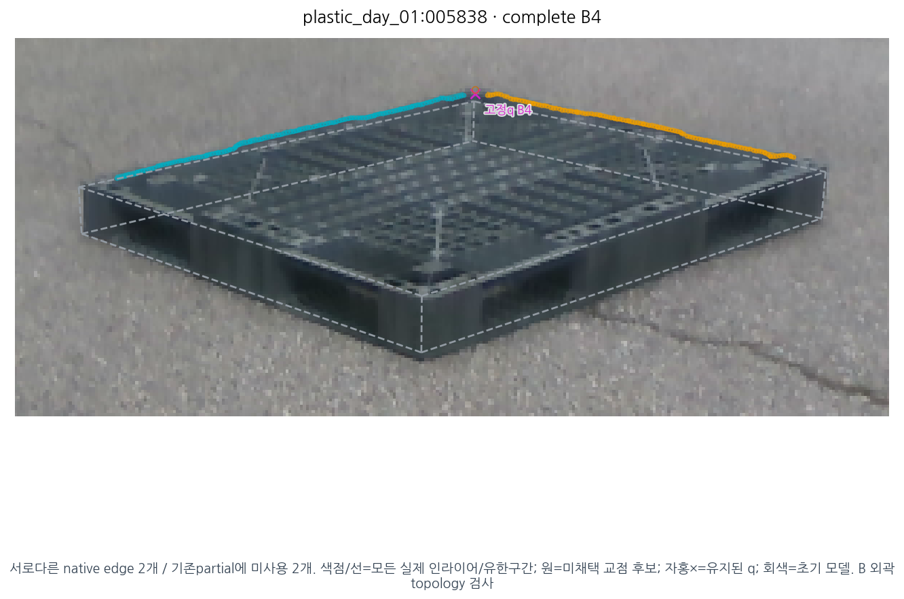
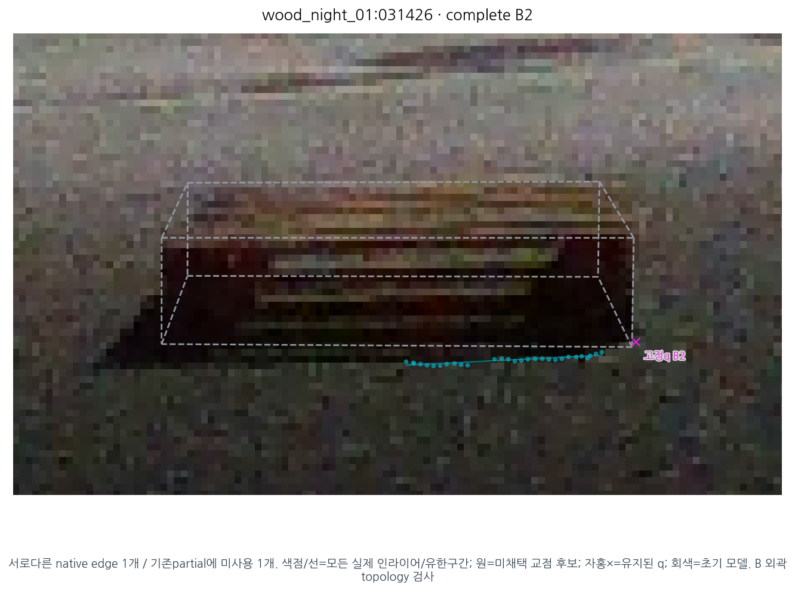
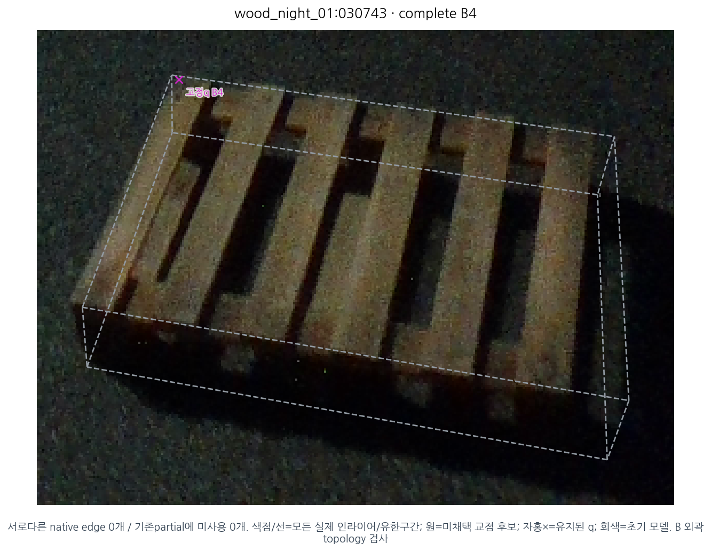

완전 B/I 비용으로 남아 있는 점 중 실제 선 지지를 살핀 읽기 전용 감사입니다. B 외곽과 I 내부선을 섞지 않았습니다. edge 두 개는 통계적 독립을 뜻하지 않으며, 여러 parallel/subset 대안을 새 정보로 세지 않았습니다. I의 두 선은 기하 가능성이지 실제 native 코너·ownership 인증이 아닙니다. 모든 교점은 미채택이며 공분산/상태/q/기존 방법을 바꾸지 않았습니다. 기존 oldpartial CAL 모델을 이 새 모집단에 전이하지 않았습니다.
| 집합 | 역할 | 완전 점 | ≥1 edge | 어떤 대안쌍 비평행 | 모든 대안쌍 비평행인 edge쌍 | 두 edge 모두 미사용 | B topology / I 유한·shift |
|---|---|---|---|---|---|---|---|
| CAL | B | 176 | 76 | 13 | 13 | 8 | 5 |
| CAL | I | 8 | 6 | 1 | 1 | 1 | 1 |
| TEST | B | 157 | 111 | 30 | 30 | 11 | 22 |
| TEST | I | 6 | 6 | 5 | 5 | 5 | 4 |
| REMAINDER | B | 428 | 322 | 137 | 137 | 102 | 107 |
| REMAINDER | I | 38 | 32 | 22 | 22 | 22 | 19 |
전238 프레임·모든 코너/대안 검산 · 표시 선택·기존 실패사례 기록
eval_outside:1778651519235162880

서로다른 native edge 2개 / 기존partial에 미사용 2개. 색점/선=모든 실제 인라이어/유한구간; 원=미채택 교점 후보; 자홍×=유지된 q; 회색=초기 모델. B 외곽 topology 검사
eval_outside:1778651519235162880

서로다른 native edge 2개 / 기존partial에 미사용 2개. 색점/선=모든 실제 인라이어/유한구간; 원=미채택 교점 후보; 자홍×=유지된 q; 회색=초기 모델. I 내부선 기하 진단, ownership 인증 아님
eval_noapril:1775201415399297536

서로다른 native edge 2개 / 기존partial에 미사용 2개. 색점/선=모든 실제 인라이어/유한구간; 원=미채택 교점 후보; 자홍×=유지된 q; 회색=초기 모델. B 외곽 topology 검사
plastic_day_01:005838

서로다른 native edge 2개 / 기존partial에 미사용 2개. 색점/선=모든 실제 인라이어/유한구간; 원=미채택 교점 후보; 자홍×=유지된 q; 회색=초기 모델. B 외곽 topology 검사
wood_night_01:031426

서로다른 native edge 1개 / 기존partial에 미사용 1개. 색점/선=모든 실제 인라이어/유한구간; 원=미채택 교점 후보; 자홍×=유지된 q; 회색=초기 모델. B 외곽 topology 검사
wood_night_01:030743

서로다른 native edge 0개 / 기존partial에 미사용 0개. 색점/선=모든 실제 인라이어/유한구간; 원=미채택 교점 후보; 자홍×=유지된 q; 회색=초기 모델. B 외곽 topology 검사